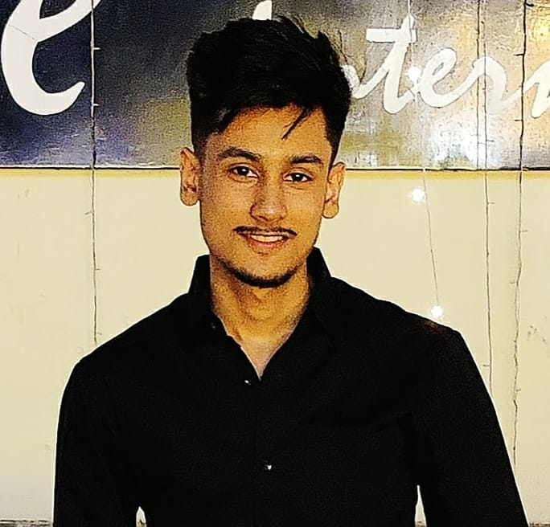

Christ Deemed To Be University Bangalore
I am currently pursuing an MCA degree from Christ University Bangalore (2023-2025), a renowned institution with a strong emphasis on technology and innovation. The program's comprehensive curriculum and experienced faculty are empowering me with the knowledge and skills necessary to excel in the field of computer applications. Being part of this esteemed university in Bangalore, a hub for IT and technology, provides me with exciting opportunities for personal and professional growth in the dynamic world of information technology.
I am currently pursuing an MCA degree from Christ University Bangalore (2023-2025), a renowned institution with a strong emphasis on technology and innovation. The program's comprehensive curriculum and experienced faculty are empowering me with the knowledge and skills necessary to excel in the field of computer applications. Being part of this esteemed university in Bangalore, a hub for IT and technology, provides me with exciting opportunities for personal and professional growth in the dynamic world of information technology.
BIRLA INSTITUTE OF TECHNOLOGY MESRA RANCHI
I successfully graduated with a BCA degree from BIT Mesra, Ranchi (2019-2022), an esteemed institution with a rich legacy of academic excellence. During my time at the university, I immersed myself in a comprehensive curriculum that honed my skills in computer science and applications. BIT Mesra's esteemed faculty and state-of-the-art facilities have enabled me to develop critical thinking and technical skills, positioning me for a promising career in the ever-evolving field of computer science. I have grown with a strong foundation to pursue my passion for technology and embark on a promising career in the IT industry.
I successfully graduated with a BCA degree from BIT Mesra, Ranchi (2019-2022), an esteemed institution with a rich legacy of academic excellence. During my time at the university, I immersed myself in a comprehensive curriculum that honed my skills in computer science and applications. BIT Mesra's esteemed faculty and state-of-the-art facilities have enabled me to develop critical thinking and technical skills, positioning me for a promising career in the ever-evolving field of computer science. I have grown with a strong foundation to pursue my passion for technology and embark on a promising career in the IT industry.
CHINMAYA VIDYALAYA
I completed my higher secondary education at Chinmaya Vidyalaya in Jamshedpur (2017-2019), achieving a commendable 80% on the intermediate exams. Chinmaya Vidyalaya provided a nurturing and intellectually stimulating environment, fostering my holistic development and academic growth. The school's emphasis on character-building and holistic education encouraged me to explore my interests beyond academics. Engaging with passionate teachers and supportive peers, I developed a strong academic foundation and critical thinking skills. Securing 80% on the intermediate exams is a testament to my hard work, dedication, and commitment to learning. My time at Chinmaya Vidyalaya has not only prepared me for higher education but also instilled in me values that will guide me through life's journey.
I completed my higher secondary education at Chinmaya Vidyalaya in Jamshedpur (2017-2019), achieving a commendable 80% on the intermediate exams. Chinmaya Vidyalaya provided a nurturing and intellectually stimulating environment, fostering my holistic development and academic growth. The school's emphasis on character-building and holistic education encouraged me to explore my interests beyond academics. Engaging with passionate teachers and supportive peers, I developed a strong academic foundation and critical thinking skills. Securing 80% on the intermediate exams is a testament to my hard work, dedication, and commitment to learning. My time at Chinmaya Vidyalaya has not only prepared me for higher education but also instilled in me values that will guide me through life's journey.
RVS ACADEMY
I successfully completed my secondary education at RVS Academy in Jamshedpur (2017), achieving an impressive 88% on the board exams. My time at RVS Academy was instrumental in shaping both my academic foundation and personal growth. The school's rigorous curriculum, dedicated teachers, and nurturing environment played a pivotal role in my academic success. Beyond academics, I actively participated in various extracurricular activities that honed my leadership and teamwork skills. Securing 88% on the board exam reflects my commitment to excellence and my ability to excel in a challenging academic environment. My experience at RVS Academy has left an indelible mark on my educational journey, instilling in me a passion for learning and setting the stage for my future endeavors.
I successfully completed my secondary education at RVS Academy in Jamshedpur (2017), achieving an impressive 88% on the board exams. My time at RVS Academy was instrumental in shaping both my academic foundation and personal growth. The school's rigorous curriculum, dedicated teachers, and nurturing environment played a pivotal role in my academic success. Beyond academics, I actively participated in various extracurricular activities that honed my leadership and teamwork skills. Securing 88% on the board exam reflects my commitment to excellence and my ability to excel in a challenging academic environment. My experience at RVS Academy has left an indelible mark on my educational journey, instilling in me a passion for learning and setting the stage for my future endeavors.
Certification Course On Programming Languages
I have recently completed a comprehensive certification course covering essential programming languages such as C, C++, Java, and Python (2022-2023). This intensive training has provided me with a versatile skill set that spans the spectrum of software development. Through hands-on projects and in-depth study, I have gained proficiency in designing, coding, and debugging applications in each of these languages. This certification not only solidifies my understanding of programming fundamentals but also equips me to tackle diverse coding challenges and contribute effectively to software development teams. My ability to seamlessly navigate through these languages positions me at the forefront of innovation in the dynamic realm of technology.
I have recently completed a comprehensive certification course covering essential programming languages such as C, C++, Java, and Python (2022-2023). This intensive training has provided me with a versatile skill set that spans the spectrum of software development. Through hands-on projects and in-depth study, I have gained proficiency in designing, coding, and debugging applications in each of these languages. This certification not only solidifies my understanding of programming fundamentals but also equips me to tackle diverse coding challenges and contribute effectively to software development teams. My ability to seamlessly navigate through these languages positions me at the forefront of innovation in the dynamic realm of technology.

Bangalore, Karnataka - 560100
Software Developer
"In the hands of great developers, software becomes art – a symphony of logic, creativity, and endless possibilities."
Bangalore, Karnataka - 560100